2 Anatomy of a Pipeline
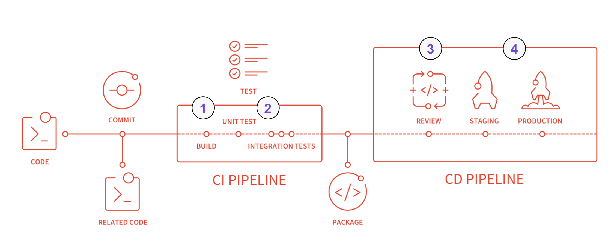
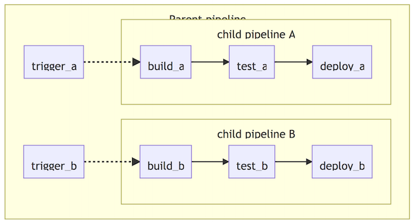
GitLab Pipeline Graph
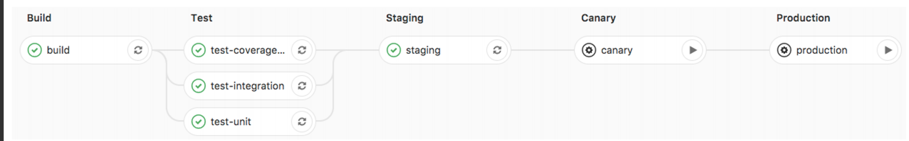
- Pipeline graph
- Shows how jobs are executed in stages
- Stages are run in serial to each other
- Jobs in each stage executed in parallel
- If one job in a stage fails, the next stage is not (usually) executed
.gitlab-ci.yml Example
image: registry.gitlab.com/gitlab-examples/kubernetes-deploy
stages:
- build
- deploy
variables:
KUBE_DOMAIN: example.com
build:
stage: build
script:
- command build
only:
- master
deploy:
stage: deploy
script:
- command deploy
environment:
name: production
url: http://production.example.com
variables:
DISABLE_POSTGRES: "yes"
only:
- master
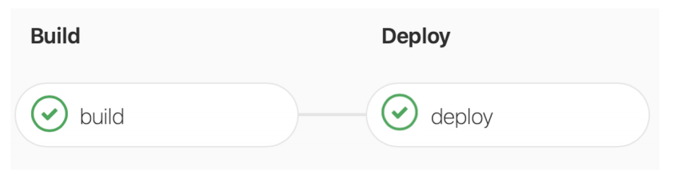
Basic Parameters
- image
- services
- script
- before_script & after_script
- variables
- environment
- cache
- artifacts
- rules
- tags
- when
Basic Parameters
test:
script:
- apt-get update -qy
- bundle install --path /cache
- bundle exec rake test
staging:
stage: deploy
script:
- gem install dpl
- dpl --provider=heroku --app=ruby-test-staging --api-key=$HEROKU_KEY
only:
- master
production:
stage: deploy
script:
- gem install dpl
- dpl --provider=heroku --app=ruby-prod --api-key=$HEROKU_PROD_KEY
only:
- tags
Image
- Images are pulled from Docker Hub by default
Use of a public image:
image: ruby:2.3
- Images stored in the GitLab Container Registry
Use of a custom image:
image: 'registry.gitlab.com/gitlab-org/ci-trainingsample:latest'
image: registry.example.com/k8-deploy:latest
Services & Variables
Services: Services lines tell the Runner that additional images are needed
services:
- postgres
Variables: Variables also defined in Project >
Settings > CI/CD > Variables
variables:
POSTGRES_DB: rails-sample-1_test
POSTGRES_USER: root
POSTGRES_PASSWORD: ”xyzzy”
.gitlab-ci.yml
image: registry.example.com/k8-deploy:latest
services:
- postgres
variables:
POSTGRES_DB: rails-sample-1_test
Stages
Default Stages: Build, Test, Deploy
User can define custom stages & any number of jobs per stage
stages:
- build
- test
- review
- deploy
- Build: Source code and other dependencies are combined and built
- Test: Automated tests are run to validate the code and behavior
- Review: The code is put through review apps for peer review and final approvals
- Deploy: The final product is deployed to a designated environment
Stages seperate jobs into logical sections while Jobs perform the actual tasks
Jobs and Scripts
- Each Stage Can Have Multiple Jobs
- Jobs Run In Parallel
- Scripts Can Be Defined Several Different Ways
- Script Examples
build-code:
stage: build
script: build-it.sh
build-other-code:
stage: build
script: src/other/code/build-it.sh
script: command build
script:
- npm install
- npm build
script: scripts/build_script.sh
image: registry.example.com/k8-deploy:latest
services:
- postgres
variables:
- POSTGRES_DB: rails-sample-1_test
stages:
- build
- test
- deploy
deploy-code:
stage: deploy
script:
- command deploy
Environments
The environment keyword defines where the app is deployed and is defined by 3 parts.
environment:
name: prod
url: http://$CI_PROJECT_NAME.$KUBE_DOMAIN
when: manual
When triggers jobs & stages manually (e.g. deploy to production)
Only & Except- Restricting When a Job is Executed
pseudo-deploy:
stage: deploy
script:
- command deploy_review
only:
- branches
except:
- master
environment:
name: review
url: http://$CI_PROJECT_NAME-review.$KUBE_DOMAIN
- Only: The name of branch to execute on (in this case all branches)
- Except: Branches NOT to execute on with exception to the Master Branch
The rules syntax is an improved, more powerful solution for defining when jobs should run or not. Consider using rules instead of only/except to get the most out of your pipelines.
before_script & after_script
Run before and after the script defined in each job
- Can update the image with the latest version of components
- They run within the job and can interact with the job
before_script
is used to define a command that should be run before each job, including deploy jobs, but after the restoration of any artifacts
before_script:
- echo $CI_BUILD_STAGE
- apt-get update
- apt-get install node-js -y
- bundle install
- npm install
after_script:
- rm temp/*.tmp
after_script
is used to define the command that will be run after each job, including failed ones.
Cache & Artifacts
Cache is used to pass information between jobs & stages by storing project dependencies
cache:
paths:
- binary/
- .config
There may be build artifacts you want to save
artifacts:
when: on_success
paths:
- bin/target
image: registry.example.com/k8-deploy:latest
services:
- postgres
variables:
- POSTGRES_DB: rails-sample-1_test
cache:
paths:
- binary/
stages:
- build
- test
- deploy
build-it:
stage: build
script:
- command build
only:
- master
artifacts:
when: on_success
paths:
- bin/target
deploy-code:
stage: deploy
script:
- command deploy
environment:
name: production
url: http://$CI_PROJECT_NAME.$KUBE_DOMAIN
when: manual
only:
- master
Tags
Only execute on runners with the ‘ruby’ and ‘test’ tags
job-name:
tags:
- ruby
- test
build-it:
stage: build
script:
- command build
only:
- master
tags:
- ruby
- test
artifacts:
when: on_success
paths:
- bin/target
Advanced Keywords and DRY
Advanced Parameters
- dependencies
- needs
- parallel
- trigger
- include
- extends
- “.” anchors & <
dependencies
build:osx:
stage: build
script: make build:osx
artifacts:
paths:
- binaries/
build:linux:
stage: build
script: make build:linux
artifacts:
paths:
- binaries/
test:osx:
stage: test
script: make test:osx
dependencies:
- build:osx
test:linux:
stage: test
script: make test:linux
dependencies:
- build:linux
deploy:
stage: deploy
script: make deploy
- paths
- dependencies
Scenario
By default, all artifacts from all previous stages are passed, but you can use the dependencies parameter to define a limited list of jobs (or no jobs) to fetch artifacts from.
Example
In the following example, we define two jobs with
artifacts, build:osx and build:linux. When the
test:osx is executed, the artifacts from build:osx
will be downloaded and extracted in the context of
the build. The same happens for test:linux and
artifacts from build:linux.
The job deploy will download artifacts from all previous jobs because of the stage precedence.
needs
linux:build:
stage: build
mac:build:
stage: build
lint:
stage: test
needs: []
linux:rspec:
stage: test
needs: ["linux:build"]
linux:rubocop:
stage: test
needs: ["linux:build"]
mac:rspec:
stage: test
needs: ["mac:build"]
mac:rubocop:
stage: test
needs: ["mac:build"]
production:
stage: deploy
Scenario:
The needs: keyword enables executing jobs out-of-order, allowing you to implement a directed acyclic
graph in your CI configuration.
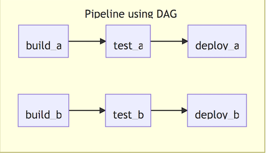
This lets you run some jobs without waiting for other ones, disregarding stage ordering so you can have multiple stages running concurrently.
Example:
Linux path: the linux:rspec and linux:rubocop jobs
will be run as soon as the linux:build job finishes
without waiting for mac:build to finish.
macOS path: the mac:rspec and mac:rubocop jobs
will be run as soon as the mac:build job finishes,
without waiting for linux:build to finish.
parallel
# Gemfile
source 'https://rubygems.org'
gem 'rspec'
gem 'semaphore_test_boosters'
++++++
# .gitlab-ci.yml
test:
parallel: 3
script:
- bundle
- bundle exec rspec_booster --job $CI_NODE_INDEX/$CI_NODE_TOTAL
Scenario
parallel allows you to configure how many instances of a job to run in parallel. This value has to be greater than or equal to two (2) and less than or equal to 50.
Example
A simple example using Semaphore Test Boosters and RSpec to run some Ruby tests.
trigger
rspec:
stage: test
script: bundle exec rspec
staging:
stage: deploy
trigger:
project: my/deployment
branch: stable
Scenario
trigger allows you to start a downstream pipeline. When a job created from trigger definition is started by GitLab, a downstream pipeline gets created.
Example
It is possible to configure a branch name that GitLab will use to create a downstream pipeline with.
Variable Precedence & Scoping
Variable Priority
The order of precedence for variables is (from highest to lowest):
- Trigger variables, scheduled pipeline variables, or manual pipeline run variables
- Project-level variables or protected variables.
- Group-level variables or protected variables.
- Inherited environment variables.
- YAML-defined job-level variables.
- YAML-defined global variables
- Deployment variables.
- Predefined environment variables
Scenario
API_TOKEN=secureas a project variable.API_TOKEN=yamlin your.gitlab-ci.yml.
API_TOKEN will take the value secure as the project variables take precedence over those defined in .gitlab-ci.yml.
Registry & Deployments
What are Package and Container Registries?
- Package Registry
GitLab Packages allows organizations to utilize GitLab as a private repository for a variety of common package managers. Users are able to build and publish packages, which can be easily consumed as a dependency in downstream projects.
- Container Registry
A secure and private registry for Docker images built-in to GitLab. Creating, pushing, and retrieving images works out of the box with GitLab CI/CD.
Security Scanning & Reports
GitLab Application Security
GitLab can check your application for security vulnerabilities that may lead to unauthorized access, data leaks, denial of services, and more. GitLab reports vulnerabilities in the merge request so you can fix them before merging.
The Security Dashboard provides a high-level view of vulnerabilities detected in your projects, pipeline, and groups.
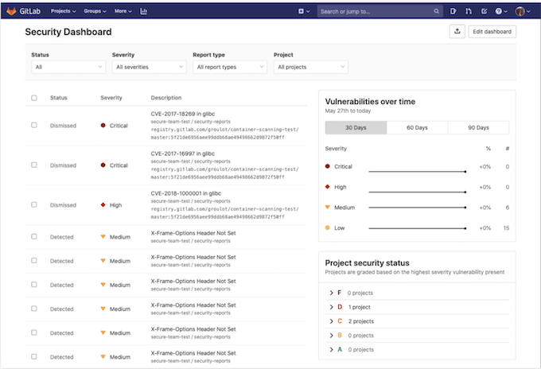
Security Configuration
The security configuration page displays the configuration state of each of the security features and can be accessed through a project’s sidebar nav.
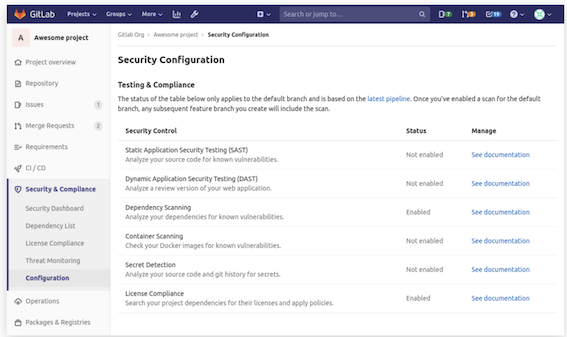
Static Application Security Testing (SAST)
Static Application Security Testing (SAST) is used to analyze your source code for known vulnerabilities.
GitLab checks the SAST report, compares the found vulnerabilities between the source and target branches, and shows the information right on the merge request.
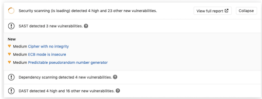
Configuration
Enabling Docker-in-Docker
include:
- template: SAST.gitlab-ci.yml
variables:
SAST_DISABLE_DIND: "false"
Enabling Kubesec analyzer
include:
- template: SAST.gitlab-ci.yml
variables:
SCAN_KUBERNETES_MANIFESTS: "true"
Code Quality Overview
With the help of GitLab CI/CD, you can analyze your source code quality using GitLab Code Quality.
Code Quality:
- Uses Code Climate Engines, which are free and open source. Code Quality doesn’t require a Code Climate subscription.
- Runs in pipelines using an Docker image built in GitLab Code Quality project.
- Can make use of a template.
- Is available with Auto DevOps.
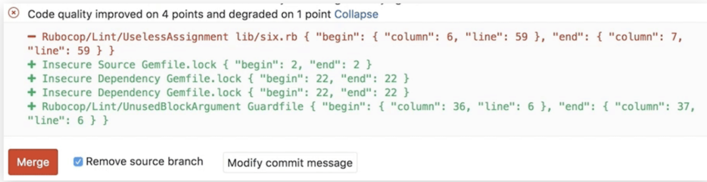
How Code Quality Works
First, you need GitLab Runner configured:
- Information on the built-in GitLab Code Quality template.
- Examples of manual GitLab configuration for earlier GitLab versions
Once you setup the Runner, include the Code Quality template in your CI configuration:
include:
- template: Code-Quality.gitlab-ci.yml
code_quality:
artifacts:
paths: [gl-code-quality-report.json]
Code Quality Reports
Once the Code Quality job has completed:
- The full list of code quality violations generated by a pipeline is available in the Code Quality tab of the Pipeline Details page.
- Potential changes to code quality are shown directly in the merge request. The Code Quality widget in the merge request compares the reports from the base and head of the branch, then lists any violations that will be resolved or created when the branch is merged.
- The full JSON report is available as a downloadable artifact for the
code_qualityjob
Container Scanning
Your application’s Docker image may itself be based on Docker images that contain known vulnerabilities.By including an extra job in your pipeline that scans for those vulnerabilities and displays them in a merge request, you can use GitLab to audit your Docker-based apps.
You can enable container scanning by doing one of the following:
- Include the CI job in your existing
.gitlab-ci.ymlfile - Implicitly use Auto Container Scanning provided by Auto DevOps.
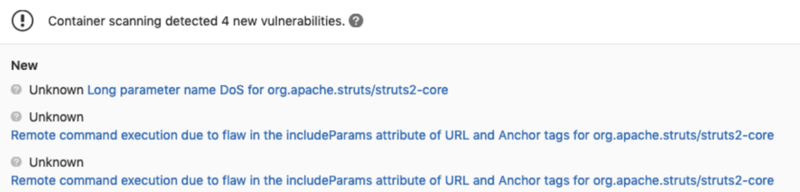
Junit Testing
It is very common that a CI/CD pipeline contains a test job that will verify your code. If the tests fail, the pipeline fails and users get notified. The person that works on the merge request will have to check the job logs and see where the tests failed so that they can fix them.
You can configure your job to use JUnit test reports, and GitLab will display a report on the merge request so that it’s easier and faster to identify the failure without having to check the entire log
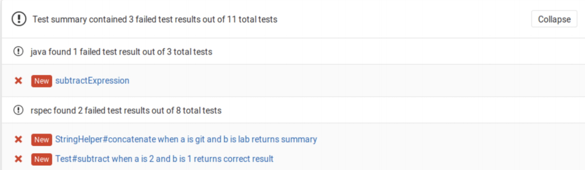